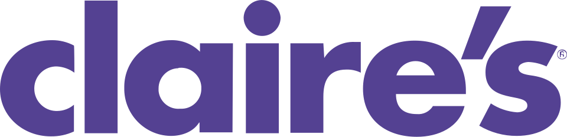

홈 > 브랜드 매거진 > Claire's
Claire's
클레어스(Claire's)는 틴에이저와 젊은 여성을 주 고객으로 하는 미국의 패션 액세서리·주얼리 전문 소매 브랜드이다.
산업 분야 리테일·커머스 · 공개 등급 자료 기반 · 브랜드 평가 4.1 ★

한눈에 보는 브랜드
클레어스는 10대와 트윈 여성을 핵심 고객으로 하는 미국 발상의 글로벌 패션 액세서리·주얼리·귀 피어싱 소매 체인이다. 1961년 가발 기업 패션 트레스 인더스트리스로 출발해 1973년 주얼리 매장 체인을 인수하며 액세서리 전문 기업으로 전환했고, 창업자 부인의 이름을 따 클레어스로 개명했다.
전성기에는 전 세계 약 2,300개 매장망을 운영했으며, 누적 1억 개가 넘는 귀를 뚫은 피어싱 분야 절대 강자로 성장했다. 그러나 2018년과 2025년 두 차례 미국 파산보호를 신청하며 구조조정의 전환점을 맞았다.
브랜드 관점
클레어스의 본질은 주얼리 판매가 아니라 '첫 귀 뚫기'라는 통과의례를 매장에서 체험으로 묶어낸 모델에 있다. 저가 액세서리를 미끼로 매장에 들어온 소녀가 그 자리에서 피어싱을 받고, 이후 귀걸이를 계속 사도록 설계한 구조가 수십 년간 경쟁 우위였다.
그러나 쇼핑몰 트래픽 감소, 셰인·테무 등 초저가 온라인의 부상, 로비사·로완 같은 더 세련된 신흥 경쟁자의 잠식이 겹치며 모델이 흔들렸다. 2007년 차입매수로 떠안은 거대 부채는 위기를 가속했다.
최근 '피어스드 바이 클레어스' 리브랜딩과 잰지(Gen Z·알파) 공략은 핵심 자산인 피어싱 권위를 다시 무기로 삼으려는 시도다. 한국 독자에게는 트렌드 변화와 과도한 차입이 견고해 보이던 브랜드를 어떻게 무너뜨리는지 보여주는 사례이며, 오프라인 체험형 리테일의 생존 조건을 묻는 교본이다.
시작과 성장
클레어스의 뿌리는 1961년 롤런드 셰퍼가 미국 남부 가발 수요를 겨냥해 세운 패션 트레스 인더스트리스다. 이 회사는 1960년대 패션 가발 호황을 타고 세계 최대 가발 소매 기업으로 성장했다.
1970년대 들어 여성들이 가발 대신 자기 머릿결로 눈을 돌리면서 수요가 식자, 셰퍼는 사업 다각화를 모색했다. 첫 번째 전환점은 1973년으로, 약 25개 점포의 주얼리 매장 체인 클레어스 부티크를 인수하고 사명을 클레어스 스토어스로 바꾸며 패션 주얼리·액세서리 기업으로 정체성을 재정의한 것이다.
부인의 이름 클레어가 브랜드명이 되었다. 두 번째 전환점은 1990년대 공격적 확장으로, 1996년 아이싱 체인을 비롯해 영국·스위스 등 유럽 체인을 잇따라 사들이며 글로벌 매장망을 구축했다.
2007년에는 사모펀드 아폴로가 약 31억 달러에 인수해 비상장 전환했다.
브랜드 아이덴티티
브랜드의 핵심 가치는 소녀의 자기표현과 성장의 순간을 함께한다는 약속이다. 비주얼 아이덴티티는 라벤더·퍼플 색조를 중심으로 젊음과 발랄함, 창의성을 발산하며, 새 로고와 캐릭터 '피어스'를 앞세운 최근 리뉴얼에서도 보라색 정서는 유지됐다.
1차 타깃은 통상 8~13세 트윈 소녀이며, 최근에는 잰지·알파 세대로 연령대와 톤을 조정하고 있다. 보이스는 친구처럼 가볍고 대화체이며, 매장 직원이 첫 피어싱을 다정하게 안내하는 경험 자체가 브랜드 언어로 기능한다.
제품과 서비스
취급 품목은 귀걸이를 중심으로 한 패션 주얼리, 헤어 액세서리, 가방·파우치, 화장 소품, 캐릭터 굿즈 등 10대 취향의 저가 액세서리 전반이다. 14K 금, 도금, 티타늄, 스테인리스 등 저자극 소재 귀걸이를 폭넓게 갖췄다.
핵심 서비스는 키트 구매와 연동된 무료 귀 피어싱이며, 채널은 쇼핑몰 중심 직영 매장과 온라인몰, 자매 브랜드 아이싱으로 구성됐다.
현재 상태
북미 본사는 일리노이주 호프먼 에스테이츠에 있으며, 인근 로즈먼트로 이전이 예정돼 있다. 지배구조는 2025년 8월 두 번째 미국 파산보호 신청 이후 크게 바뀌었다.
같은 해 9월 사모 지주사 에임스 왓슨이 약 1억 4천만 달러 규모로 북미 사업과 지식재산권, 최대 약 950개 매장을 인수해 청산을 피했다. 이 과정에서 약 291개 매장 폐점과 아이싱 브랜드 정리가 진행됐다.
영국·프랑스 등 일부 해외 법인도 파산 절차에 들어갔다. 한국 내 직접 운영 현황 등 그 밖의 세부 사항은 미공개.
타임라인
정리된 연도형 이벤트가 없습니다.
BI/CI 변천사
함께 읽을 브랜드
 리테일·커머스 · 자료 기반달러 제너럴
리테일·커머스 · 자료 기반달러 제너럴달러제너럴(Dollar General)은 생활필수품과 잡화를 초저가에 판매하는 미국의 달러 스토어 체인이다.
 리테일·커머스 · 매거진 완성유니클로
리테일·커머스 · 매거진 완성유니클로유니클로는 패션을 유행의 장식이 아니라 생활을 구성하는 공산품처럼 다룬다. 브랜드의 힘은 화려한 스타일보다 베이직, 품질, 가격, 운영 시스템을 일관되게 정렬하는 데...
Fl
Flaum
리테일·커머스 · 편집 검수FlaumFlaum는 2025년에 기록된 Shoppy Shop Brands 계열의 브랜드 아이덴티티 사례입니다. M/OTG가 아이덴티티 작업의 디자이너로 기록되어 있습니다....
Be
Best of the Bone
리테일·커머스 · 편집 검수Best of the BoneBest of the Bone는 2025년에 기록된 Shoppy Shop Brands 계열의 브랜드 아이덴티티 사례입니다. Universal Favourite가 아이...
Ko
Korshags
리테일·커머스 · 편집 검수KorshagsKorshags는 2025년에 기록된 Shoppy Shop Brands 계열의 브랜드 아이덴티티 사례입니다. Pond가 아이덴티티 작업의 디자이너로 기록되어 있습니다...
Ve
Veesey
리테일·커머스 · 편집 검수VeeseyVeesey는 2025년에 기록된 Shoppy Shop Brands 계열의 브랜드 아이덴티티 사례입니다. Onfire Design가 아이덴티티 작업의 디자이너로 기록...
 리테일·커머스 · 자료 기반마이크로소프트 스토어
리테일·커머스 · 자료 기반마이크로소프트 스토어마이크로소프트 스토어(Microsoft Store)는 마이크로소프트가 운영한 리테일 매장 체인이다.
 리테일·커머스 · 자료 기반월마트
리테일·커머스 · 자료 기반월마트월마트(Walmart)는 샘 월턴이 설립한 미국의 다국적 소매 기업으로, 대형 할인점·슈퍼센터를 중심으로 운영한다.